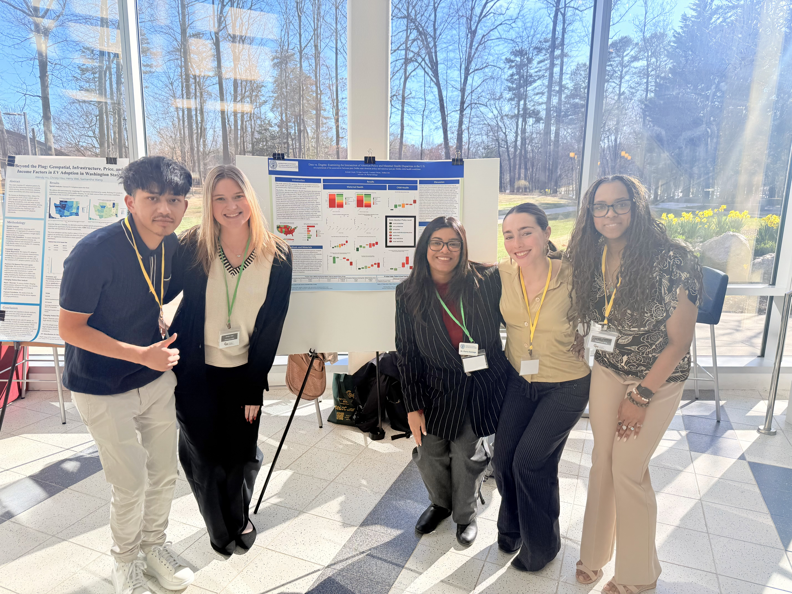
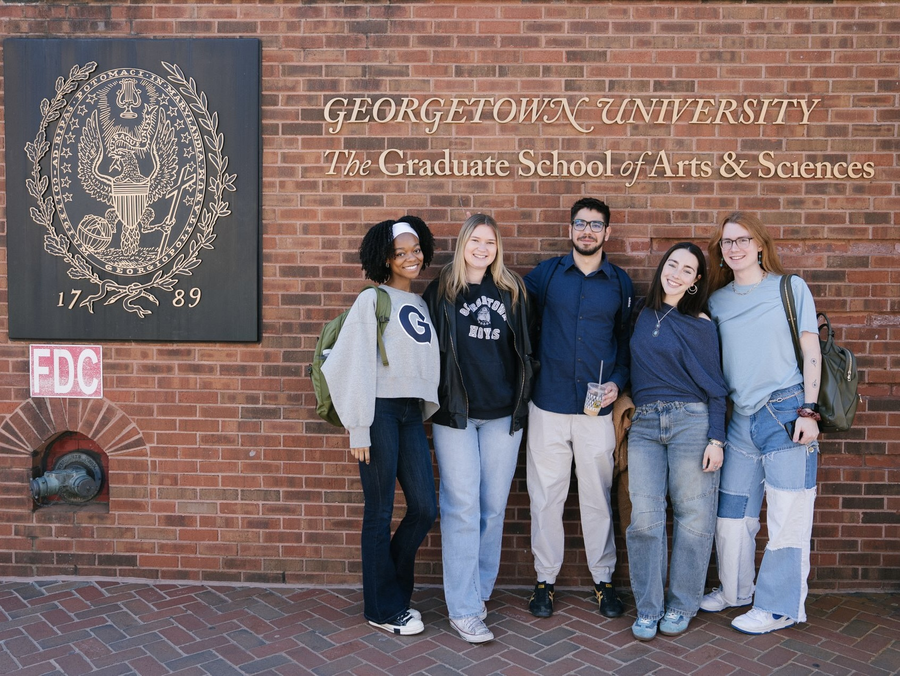
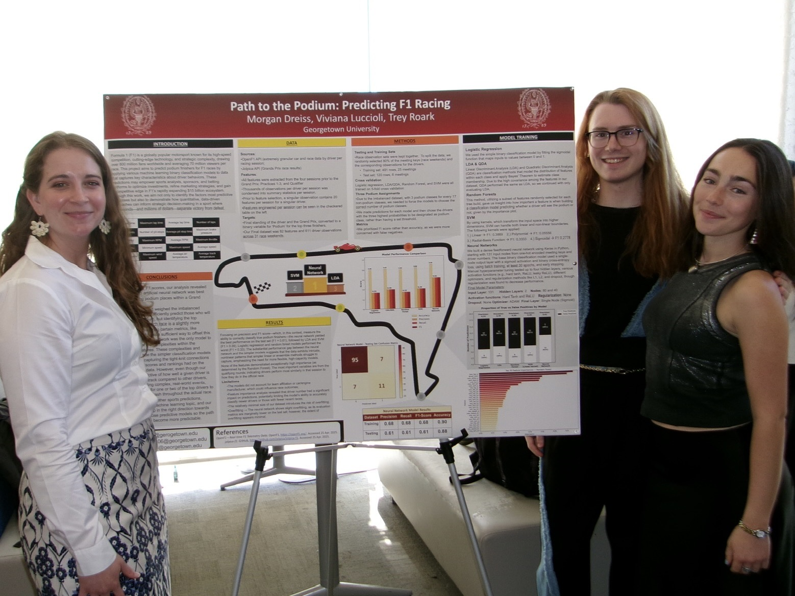
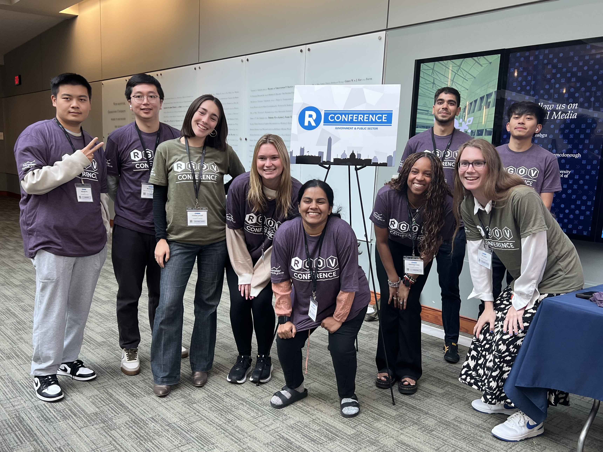

About Me
Hi, I'm Viviana!
I am a second-year M.S. student in Georgetown University's Data Science and Analytics program, graduating in May 2026. Alongside my studies, I intern part-time at the Federal Reserve Board in Washington, D.C., where I build dashboards and automation processes in the IT Statistics & Data Management division while also collaborating through the AI program with senior economists and researchers in Financial Stability and International Finance to develop AI agents and research assistants (using novel tools such as LangChain and LangGraph) that enhance and support their critical research.
I enjoy being actively involved in the Georgetown community. I currently serve as a Professional Development Center assistant, where I help fellow data science students refine their resumes and cover letters for maximum impact in technical fields. I also contribute blog posts to our program website. Furthermore, last year, I worked as a research assistant in Dr. Qiwei (Britt) He’s AI Measurement and Development (AIMD) Lab and served as a teaching assistant for DSAN 6150: Biological and Biomedical Data Science.
I also hold two Bachelors degrees from the University of Virginia in Applied Statistics (with a concentration in Biostatistics) and Global Public Health.
⭐ Interests
- Agentic AI
- Interactive Data Visualization
- Image Processing
- AI Research
- Machine Learning App Deployment
🌎 Other
- I am fluent in English, Italian, and Spanish! (and I speak a bit of French)
- I’m both a U.S. and E.U. citizen
- Former piano and voice instructor to young children
- Originally from Falls Church, VA
Highlights
- Recipient of Georgetown University’s Merit Scholarship (2024, 2025)
- Nominee, Georgetown 2025 Graduate Student Awards
- First Place, DC Metro StatConnect Conference – Graduate Research Paper Competition
- Pending Research Publications:
- Co-author on a paper with the Federal Reserve Board AI research team, submitted to the IEEE Big Data Conference 2025
- Collaborating with Program Director Dr. Purna Gamage on a publication originating from a class final project
Tech Stack




Let’s Connect 💌
I love meeting new people and learning from them! I would be happy to hear from you if you have any questions about my experience, are looking to collaborate on a project, or just want to chat.
(And I am also always open to book recommendations 😊 )